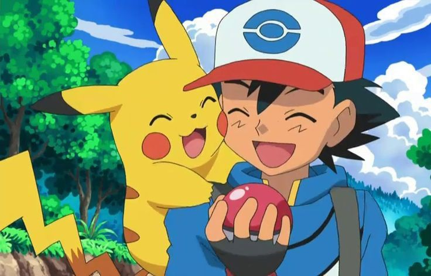

Curiosidades legais sobre Pokémon
Sim, Pokémon é um dos jogos (e franquias) com mais referências do mundo dos games! A Game Freak coloca camadas e mais camadas de inspirações em praticamente tudo: designs dos Pokémon, nomes, regiões, lendas, ataques, itens... é uma verdadeira enciclopédia de referências.
Algumas curiosidades sobre a franquia:
- Rhydon foi o primeiro Pokémon criado na história da franquia (não o Pikachu!).
- Clefairy quase foi o mascote oficial em vez do Pikachu.
- O nome "Pokémon" vem de "Pocket Monsters" (Monstros de Bolso).
- Se você levar um Togepi (ou Togetic) pro Ginásio de Cerulean, ele chora em referência ao anime (da Misty).
- Azurill pode mudar de sexo ao evoluir: 75% dos Azurill nascem fêmeas, mas ao virar Marill tem chance de virar macho.
- No anime, Pikachu é obcecado por ketchup. O motivo? O sobrenome de Ash é “Ketchum” (soa como “ketchup” em inglês).
